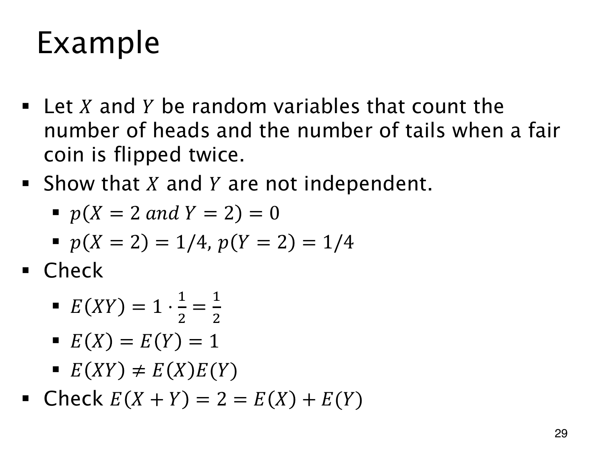

L1.11 · 第 29 页讲解原文
查看这一页课件

正面数与反面数的关系
独立抛两次公平硬币，X 记正面次数，Y 记反面次数。总有 X+Y=2，知道其中一个，就知道另一个。
取值 X=2、Y=2 不可能同时发生，所以
p(X=2,Y=2)=0,
但两者边际概率各为 1/4，乘积为 1/16。这一组已经违反独立定义，足以证明不独立。
HH、TT 时 XY=0，HT、TH 时 XY=1，于是
E(XY)=121+021=21.
E(X)=E(Y)=1，两期望的乘积是 1，不能代替 E(XY)。和的线性性却仍然成立：
E(X+Y)=E(2)=2=E(X)+E(Y).
独立的是两次抛币的结果；从同一批结果统计出的正面总数、反面总数，并不因此独立。